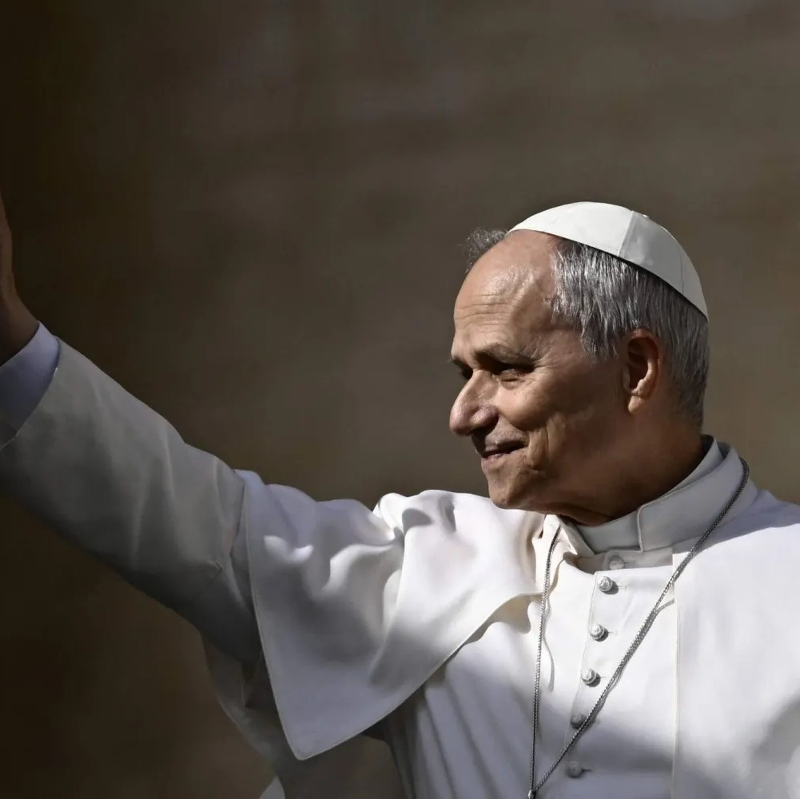

Pope Leo XIV visits four nations in Africa
2026, April 13
Algeria, Cameroon, Angola, Equatorial Guinea.
Pope Leo XIV arrived by plane in Algeria on Monday, April 13, beginning his apostolic visit to Africa. A senior Vatican official told the BBC the pope wanted to "turn the world's attention to Africa"; the BBC reported the eleven-day visit would address themes of peace, migration, and interfaith dialogue. The trip also includes stops in Cameroon, Angola, and Equatorial Guinea.The visit marked Leo's second major foreign trip as pope since his election in May last year.
The regions of the continent being visited are among the quickest growing in Catholicism in the world. There were an estimated 288 million Catholics in Africa in 2024, making up more than one-fifth of the world's total.
His first stop in Algeria marked the first papal visit to the country in history. While there, Leo planned to visit several locations including ancient Christian sites in Annaba and the Great Mosque of Algiers in the capital before departing.
The stop was followed by a visit to Cameroon, where Leo addressed about 120,000 people in Douala, encouraging young people to turn away from violence and corruption and advocating for justice and peace. He was expected to make a planned visit to a Catholic hospital in the city before traveling to Yaoundé to meet with students from the Catholic University of Central Africa.
On Sunday, April 19, the pope arrived in Angola, where he met with President João Lourenço and other officials. He later addressed a crowd gathered near the capital, Luanda. He was also expected to visit the town of Muxima, the country's main Christian pilgrimage site.
After Angola, the pope arrived on Tuesday, April 21, in Equatorial Guinea, where, according to the BBC, Catholics make up more than 70% of the central African nation, for the final leg of the visit, before his scheduled return to the Vatican.